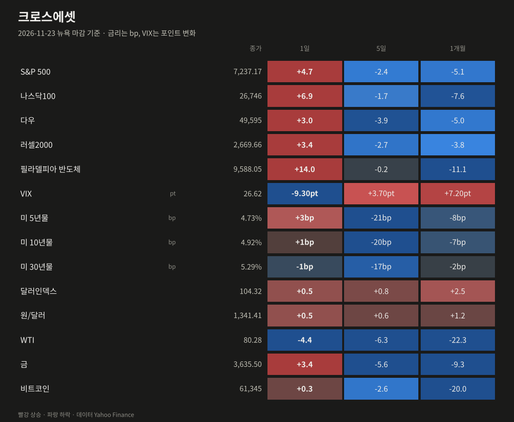
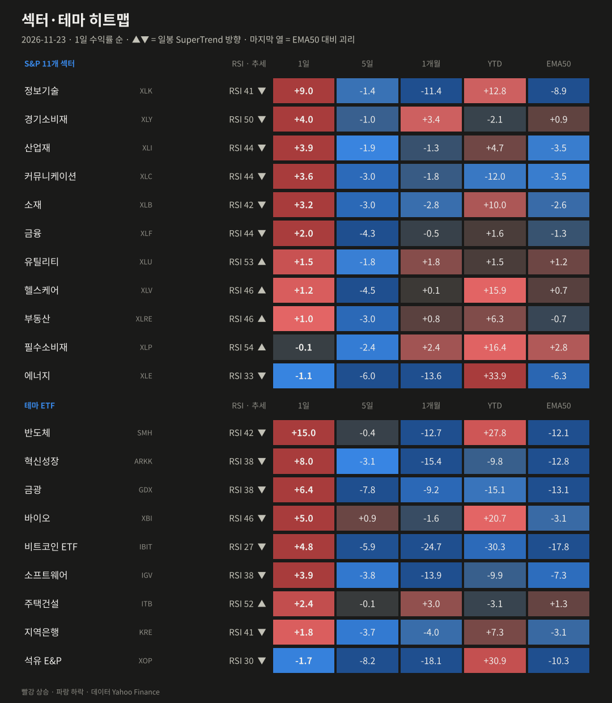
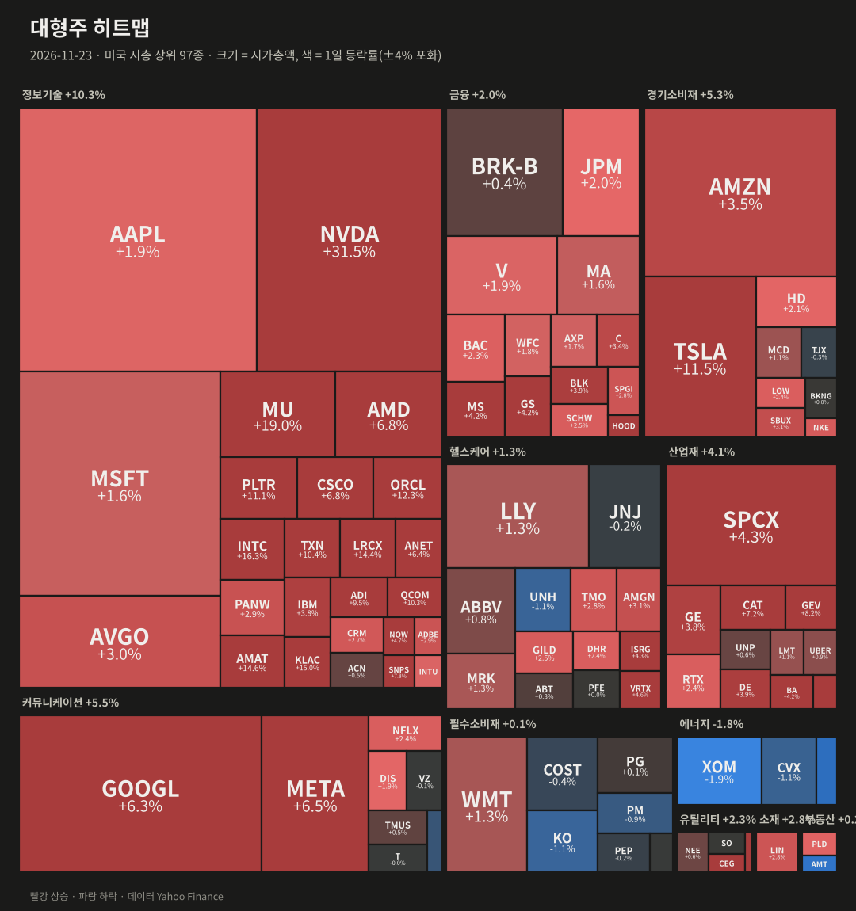
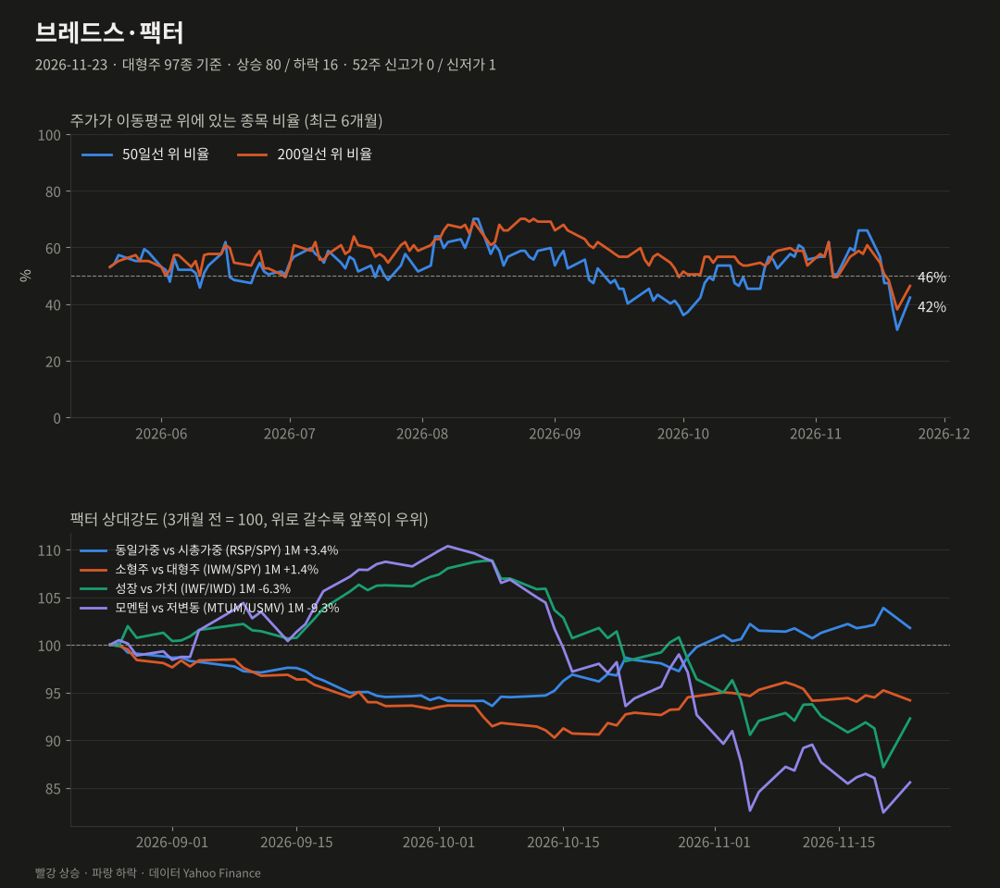
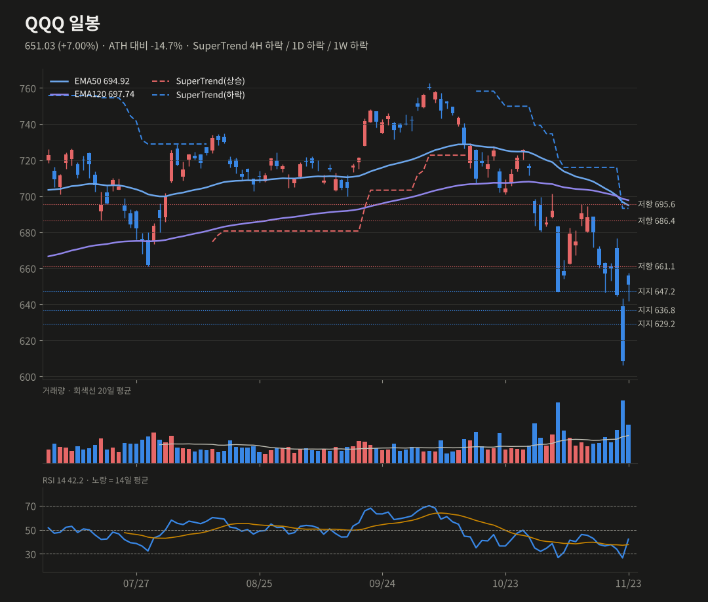
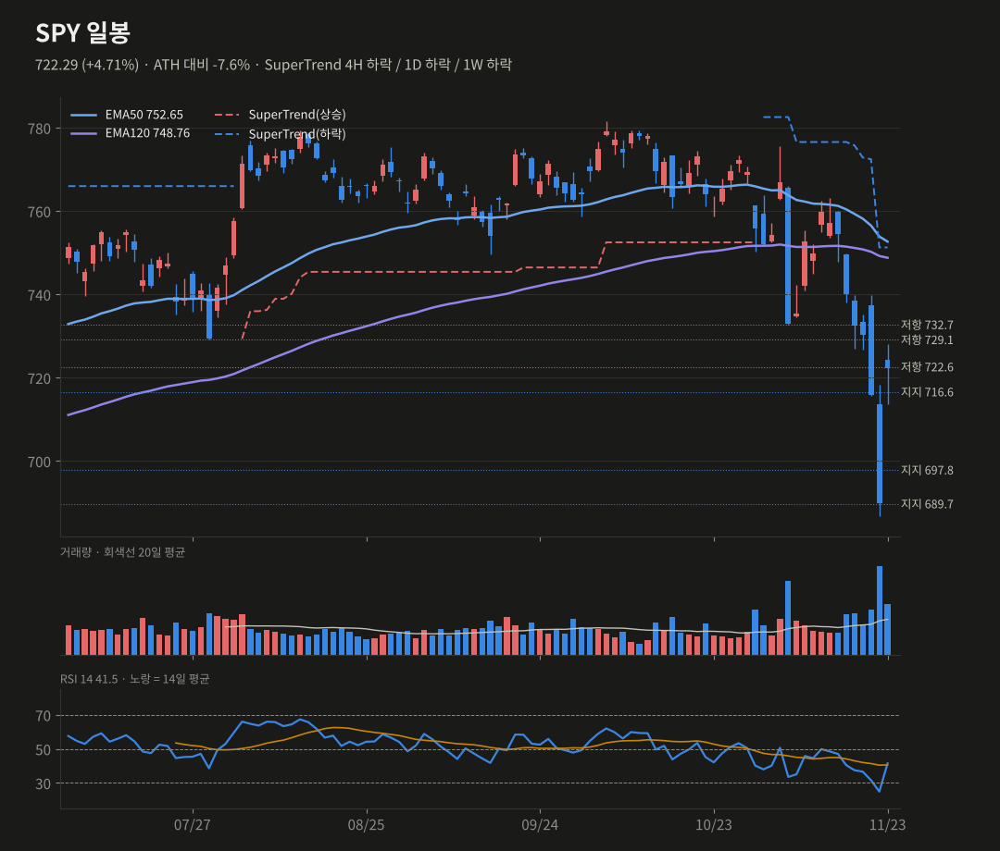
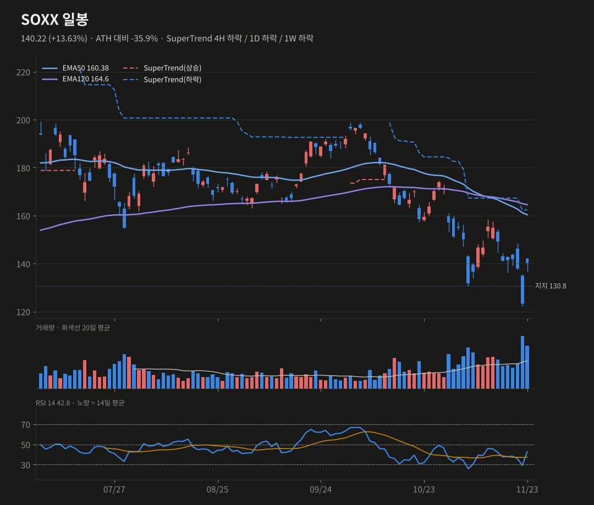
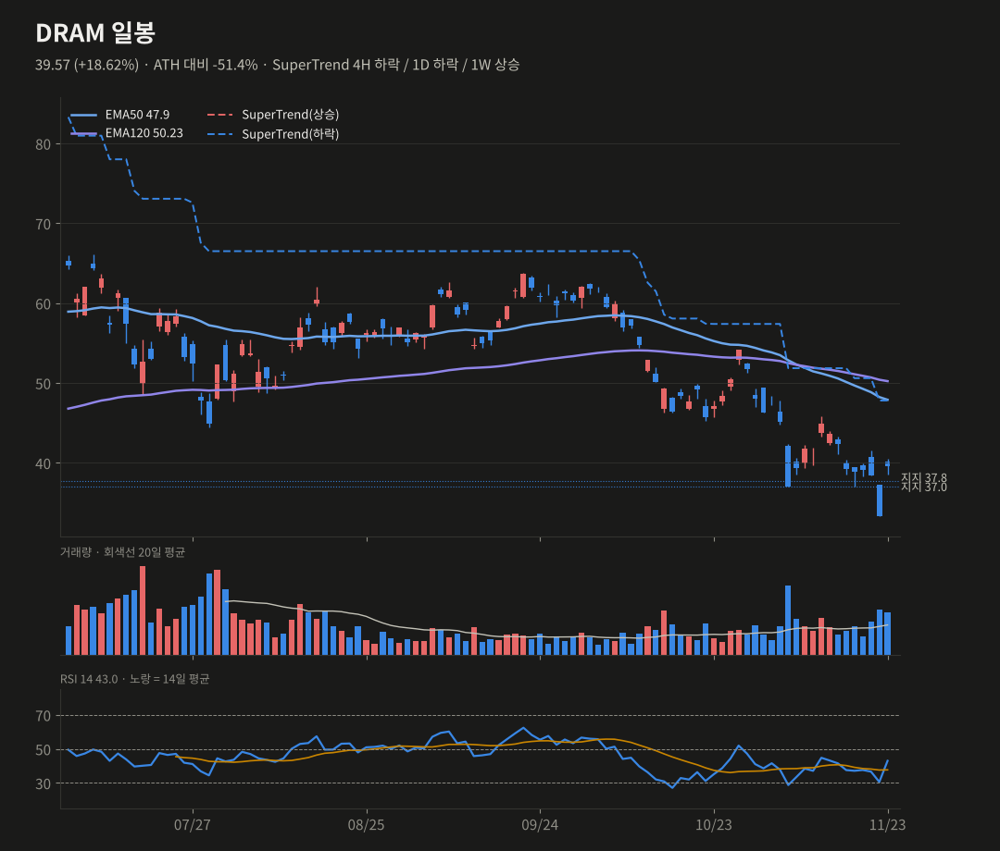

미증시 마감 브리핑
11/23(월) 뉴욕 마감 기준 · 생성 2026-11-24 06:30 KST
엔비디아가 젠슨 황 복귀에 +31.5% 급등해 반도체 +14.0%, 나스닥100 +6.9%였어요. VIX는 26.6이에요.
S&P 5007,237.17+4.73%
나스닥10026,746+6.86%
다우49,595+3.01%
러셀20002,669.66+3.40%
반도체(SOX)9,588.05+14.03%
VIX26.62-9.30pt
미 10년물4.92%+0.60bp
원/달러1,341.41+0.50%
요약
- 엔비디아가 젠슨 황 복귀에 +31.5%, 반도체 지수는 +14.0%예요.
- S&P +4.7%, 나스닥100 +6.9%였고 VIX는 26.6까지 내려왔어요.
- 네 종목 모두 RSI가 30 위로 올라와 단기 확률을 10%p씩 올렸어요.
- SPY 722.9(주봉 EMA50) 회복이 관건이고, 수요일 밤 PCE가 나와요.
종합 판단
젠슨 황 복귀로 엔비디아가 하루 만에 금요일 낙폭(−14%)의 두 배 넘게 올랐고, 반도체 지수도 금요일 하락(−10.7%)을 모두 되돌렸어요. 네 종목 모두 4H·일봉 RSI가 30 위로 올라오고 MACD가 돌아서 단기 확률을 10%p씩 올렸어요. 다만 일봉·주봉 SuperTrend는 여전히 하락이고 SPY는 주봉 EMA50(722.9) 바로 아래라, 이번 주 종가로 이 선을 되찾아야 바닥을 확인했다고 볼 수 있어요. SEC 회계 조사와 수요일 밤 PCE 물가(12월 인상 폭)가 남은 변수예요.
젠슨 황 복귀로 엔비디아가 하루 만에 금요일 낙폭(−14%)의 두 배 넘게 올랐고, 반도체 지수도 금요일 하락(−10.7%)을 모두 되돌렸어요. 네 종목 모두 4H·일봉 RSI가 30 위로 올라오고 MACD가 돌아서 단기 확률을 10%p씩 올렸어요. 다만 일봉·주봉 SuperTrend는 여전히 하락이고 SPY는 주봉 EMA50(722.9) 바로 아래라, 이번 주 종가로 이 선을 되찾아야 바닥을 확인했다고 볼 수 있어요. SEC 회계 조사와 수요일 밤 PCE 물가(12월 인상 폭)가 남은 변수예요.
무엇이 시장을 움직였나
- 엔비디아 +31.5%(165.05달러): 이사회가 만장일치로 젠슨 황을 CEO로 복귀시켰어요. 이사회는 '미국 정부 고위층의 의견을 들었고 복귀에 국가안보 위험은 없다'고 밝혔고, 트럼프 대통령도 일요일에 복귀를 공개적으로 촉구했어요(Yahoo Finance). 11/12 사임과 관련된 독립 조사는 계속 진행돼요.
- 반도체 동반 반등: 마이크론 +19.0%, 인텔 +16.3%, KLA +15.0%, 어플라이드 +14.6%, 램리서치 +14.5%로 필라델피아 반도체가 +14.0%였어요. QQQ는 1999년 상장 이후 가장 큰 폭(약 8%)으로 출발했어요(Yahoo Finance).
- 공포 완화: VIX가 26.6(−9.3pt)으로 내려왔어요. 금은 +3.4% 반등했고, WTI는 −4.4%(80.3달러)로 약세가 이어졌어요. 10년물은 4.92%(+0.6bp)로 거의 그대로예요.
- 연준: 12/9 회의 인상 확률은 채권시장 기준 약 92%, 폴리마켓 91%로 11/12(98%)보다 조금 낮아졌어요. 쿡 이사는 '더 기다리면 뒤처질 위험이 있다'고 했어요(Yahoo Finance).
- 남은 변수: 지난주 보도된 엔비디아 SEC 회계 조사는 아직 정리되지 않았어요. 필수소비재(−0.1%)·에너지(−1.1%)만 쉬었어요.
장 마감 후·시간외
- HPE는 정규장 +17.4%에 이어 실적 발표 뒤 시간외 −5.5%, 애질런트 +6.8%, 줌 −2.1%예요.
- QQQ 651.1(0.0%), SPY 723.5(+0.2%), SOXX 140.0(−0.2%), DRAM 39.7(+0.3%), 엔비디아 165.2(+0.1%)로 시간외는 잠잠해요(마감 30분 기준).

| 자산 | 종가 | 1일 | 5일 | 1개월 |
|---|---|---|---|---|
| S&P 500 | 7237.17 | +4.73% | -2.42% | -5.07% |
| 나스닥100 | 26746.1 | +6.86% | -1.66% | -7.64% |
| 다우 | 49595.31 | +3.01% | -3.90% | -5.02% |
| 러셀2000 | 2669.66 | +3.40% | -2.67% | -3.83% |
| 필라델피아 반도체 | 9588.05 | +14.03% | -0.24% | -11.05% |
| VIX | 26.62 | -9.30pt | +3.70pt | +7.20pt |
| 미 5년물 | 4.728 | +2.7bp | -20.7bp | -7.7bp |
| 미 10년물 | 4.918 | +0.6bp | -20.3bp | -7.0bp |
| 미 30년물 | 5.294 | -0.9bp | -17.3bp | -2.1bp |
| 달러인덱스 | 104.32 | +0.50% | +0.75% | +2.47% |
| 원/달러 | 1341.41 | +0.50% | +0.61% | +1.16% |
| WTI | 80.28 | -4.41% | -6.35% | -22.26% |
| 금 | 3635.5 | +3.42% | -5.64% | -9.29% |
| 비트코인 | 61345.05 | +0.30% | -2.61% | -20.00% |

| 섹터·테마 | 1일 | 5일 | 1개월 | YTD | RSI | 일봉 추세 |
|---|---|---|---|---|---|---|
| 반도체 SMH | +15.03% | -0.37% | -12.71% | +27.8% | 42 | 하락 |
| 정보기술 XLK | +8.97% | -1.44% | -11.38% | +12.8% | 41 | 하락 |
| 혁신성장 ARKK | +8.00% | -3.06% | -15.40% | -9.8% | 38 | 하락 |
| 금광 GDX | +6.43% | -7.79% | -9.23% | -15.1% | 38 | 하락 |
| 바이오 XBI | +4.98% | +0.88% | -1.59% | +20.7% | 46 | 하락 |
| 비트코인 ETF IBIT | +4.85% | -5.90% | -24.67% | -30.3% | 27 | 하락 |
| 경기소비재 XLY | +3.97% | -1.03% | +3.39% | -2.1% | 50 | 하락 |
| 소프트웨어 IGV | +3.93% | -3.78% | -13.86% | -9.9% | 38 | 하락 |
| 산업재 XLI | +3.90% | -1.93% | -1.31% | +4.7% | 44 | 하락 |
| 커뮤니케이션 XLC | +3.57% | -3.01% | -1.81% | -12.0% | 44 | 하락 |
| 소재 XLB | +3.23% | -3.05% | -2.75% | +10.0% | 42 | 하락 |
| 주택건설 ITB | +2.36% | -0.13% | +3.01% | -3.1% | 52 | 상승 |
| 금융 XLF | +1.98% | -4.35% | -0.45% | +1.6% | 44 | 하락 |
| 지역은행 KRE | +1.79% | -3.67% | -4.03% | +7.3% | 41 | 하락 |
| 유틸리티 XLU | +1.48% | -1.81% | +1.79% | +1.5% | 53 | 상승 |
| 헬스케어 XLV | +1.23% | -4.50% | +0.08% | +15.9% | 46 | 상승 |
| 부동산 XLRE | +1.04% | -3.05% | +0.78% | +6.3% | 46 | 상승 |
| 필수소비재 XLP | -0.09% | -2.40% | +2.40% | +16.4% | 54 | 상승 |
| 에너지 XLE | -1.06% | -6.00% | -13.64% | +33.9% | 33 | 하락 |
| 석유 E&P XOP | -1.66% | -8.17% | -18.06% | +30.9% | 30 | 하락 |

| 상승 상위 | 1일 | 거래량(20일 대비) | 하락 상위 | 1일 | 거래량 |
|---|---|---|---|---|---|
| NVDA | +31.48% | x2.69 | COP | -2.89% | x0.99 |
| MU | +19.04% | x1.45 | AMT | -2.66% | x0.96 |
| INTC | +16.34% | x1.06 | XOM | -1.93% | x0.98 |
| KLAC | +14.96% | x1.13 | KO | -1.14% | x1.55 |
| AMAT | +14.62% | x1.45 | UNH | -1.11% | x1.9 |
| LRCX | +14.45% | x1.25 | CVX | -1.06% | x1.03 |

대형주 97종: 상승 80 / 하락 16 · 50일선 위 42.3% (전일 30.9%, 5일 전 56.7%) · 200일선 위 46.4% · 52주 신고가 0 / 신저가 1
오른 종목 80, 내린 종목 16으로 금요일(24/73)에서 뒤집혔어요. SMA50 위 비율은 30.9%에서 42.3%로 올라왔지만 5일 전(56.7%)에는 못 미쳐요. 시총가중(SPY +4.71%)이 동일가중(RSP +2.59%)보다 2.1%p 더 올라 반도체·대형 기술주가 반등을 이끌었어요.
| 팩터 스프레드 | 1일 | 5일 | 1개월 |
|---|---|---|---|
| 동일가중 vs 시총가중 (RSP/SPY) | -2.02% | -0.41% | +3.41% |
| 소형주 vs 대형주 (IWM/SPY) | -1.10% | -0.26% | +1.40% |
| 성장 vs 가치 (IWF/IWD) | +5.85% | +1.60% | -6.34% |
| 모멘텀 vs 저변동 (MTUM/USMV) | +3.84% | +0.16% | -9.33% |
기술적 분석 · 확률
TradingView 설정과 맞춘 지표(EMA50·EMA120, SuperTrend ATR20×4, RSI14, MACD 12/26/9). 확률은 차트 기반 추정치예요.
QQQ 651.03 +7.00%
SuperTrend 4H 하락 / 1D 하락 / 1W 하락 · RSI 42.18
단기 반등 55% (+10) · 스윙 상승 30% (+5)
+7.0%로 649.6을 되찾고 651.0에 마감했어요. 4H·일봉 RSI가 30 위로 올라왔고(44.8, 42.2), 4H·일봉·주봉 MACD 히스토그램이 모두 돌아섰어요. 다만 4H SuperTrend(665.1)와 주봉 EMA50(668.5)이 바로 위에 있어 추세 전환은 아직이에요. 단기 10%p, 스윙 5%p 올렸어요.
상방 661.1 회복 → 665.1(4H SuperTrend), 668.5(주봉 EMA50)
하방 647.2 이탈 → 636.8, 629.2
SuperTrend 4H 하락 / 1D 하락 / 1W 하락 · RSI 42.18
단기 반등 55% (+10) · 스윙 상승 30% (+5)
+7.0%로 649.6을 되찾고 651.0에 마감했어요. 4H·일봉 RSI가 30 위로 올라왔고(44.8, 42.2), 4H·일봉·주봉 MACD 히스토그램이 모두 돌아섰어요. 다만 4H SuperTrend(665.1)와 주봉 EMA50(668.5)이 바로 위에 있어 추세 전환은 아직이에요. 단기 10%p, 스윙 5%p 올렸어요.
상방 661.1 회복 → 665.1(4H SuperTrend), 668.5(주봉 EMA50)
하방 647.2 이탈 → 636.8, 629.2
SPY 722.29 +4.71%
SuperTrend 4H 하락 / 1D 하락 / 1W 하락 · RSI 41.51
단기 반등 55% (+10) · 스윙 상승 30% (+5)
+4.7%로 722.3에 마감해 주봉 EMA50(722.9) 바로 아래까지 회복했어요. 4H RSI는 19.6에서 43.2로 과매도를 벗어났고, 4H 거래량은 평균의 4.1배였어요. 주봉 EMA50을 이번 주 종가로 되찾는지가 핵심이에요.
상방 722.9 회복(주봉 EMA50) → 729.1, 734.2(4H SuperTrend)
하방 716.6 이탈 → 697.8, 689.7
SuperTrend 4H 하락 / 1D 하락 / 1W 하락 · RSI 41.51
단기 반등 55% (+10) · 스윙 상승 30% (+5)
+4.7%로 722.3에 마감해 주봉 EMA50(722.9) 바로 아래까지 회복했어요. 4H RSI는 19.6에서 43.2로 과매도를 벗어났고, 4H 거래량은 평균의 4.1배였어요. 주봉 EMA50을 이번 주 종가로 되찾는지가 핵심이에요.
상방 722.9 회복(주봉 EMA50) → 729.1, 734.2(4H SuperTrend)
하방 716.6 이탈 → 697.8, 689.7
SOXX 140.22 +13.63%
SuperTrend 4H 하락 / 1D 하락 / 1W 하락 · RSI 42.77
단기 반등 50% (+10) · 스윙 상승 30% (+5)
+13.6%로 140.2에 마감해 금요일 낙폭(−10.6%)을 모두 되돌렸어요. 4H MACD 히스토그램이 −1.55에서 −0.14로 0선에 다가갔고, 일봉 RSI도 42.8로 올라왔어요. 4H SuperTrend(148.5)와 주봉 EMA50(150.1)이 위쪽 저항이에요.
상방 148.5 회복(4H SuperTrend) → 151.0
하방 130.8 이탈 → 120.5(주봉 EMA120)
SuperTrend 4H 하락 / 1D 하락 / 1W 하락 · RSI 42.77
단기 반등 50% (+10) · 스윙 상승 30% (+5)
+13.6%로 140.2에 마감해 금요일 낙폭(−10.6%)을 모두 되돌렸어요. 4H MACD 히스토그램이 −1.55에서 −0.14로 0선에 다가갔고, 일봉 RSI도 42.8로 올라왔어요. 4H SuperTrend(148.5)와 주봉 EMA50(150.1)이 위쪽 저항이에요.
상방 148.5 회복(4H SuperTrend) → 151.0
하방 130.8 이탈 → 120.5(주봉 EMA120)
DRAM 39.57 +18.62%
SuperTrend 4H 하락 / 1D 하락 / 1W 상승 · RSI 42.99
단기 반등 50% (+10) · 스윙 상승 30% (+5)
+18.6%로 39.57에 마감해 주봉 EMA120(38.45)을 되찾았어요. 4H MACD가 골든크로스를 냈고 히스토그램은 +0.12로 플러스예요. 마이크론은 +19.0%였어요. 41.9(4H SuperTrend)를 넘어야 하락 추세가 끝나요. 상장 이력이 짧아 주봉 지표는 참고만 해요.
상방 41.9 돌파(4H SuperTrend) → 43.7
하방 38.45 이탈(주봉 EMA120) → 37.8, 37.0
SuperTrend 4H 하락 / 1D 하락 / 1W 상승 · RSI 42.99
단기 반등 50% (+10) · 스윙 상승 30% (+5)
+18.6%로 39.57에 마감해 주봉 EMA120(38.45)을 되찾았어요. 4H MACD가 골든크로스를 냈고 히스토그램은 +0.12로 플러스예요. 마이크론은 +19.0%였어요. 41.9(4H SuperTrend)를 넘어야 하락 추세가 끝나요. 상장 이력이 짧아 주봉 지표는 참고만 해요.
상방 41.9 돌파(4H SuperTrend) → 43.7
하방 38.45 이탈(주봉 EMA120) → 37.8, 37.0




일정
- 11/24(화) 밤 ADI·메드트로닉(장전), 11/25(수) 새벽 델 실적
- 11/25(수) 22:30 10월 PCE·3분기 GDP 수정치
- 11/26(목) 추수감사절 휴장, 27일 조기 폐장
출처
- Stock market today: Dow, S&P 500, Nasdaq post best day since April 2025 as Nvidia stock soars 31% on Jensen Huang's return (Yahoo Finance)
- Nvidia soars 31% as board reinstates Jensen Huang as CEO, chip stocks jump (Yahoo Finance)
- Wall Street just put a $1 trillion price on Jensen Huang as Nvidia stock soars 31% after his return as CEO (Fortune)
데이터 Yahoo Finance·Nasdaq. 색은 한국식(빨강 상승·파랑 하락). 투자 판단의 참고 자료예요. 지난 브리핑